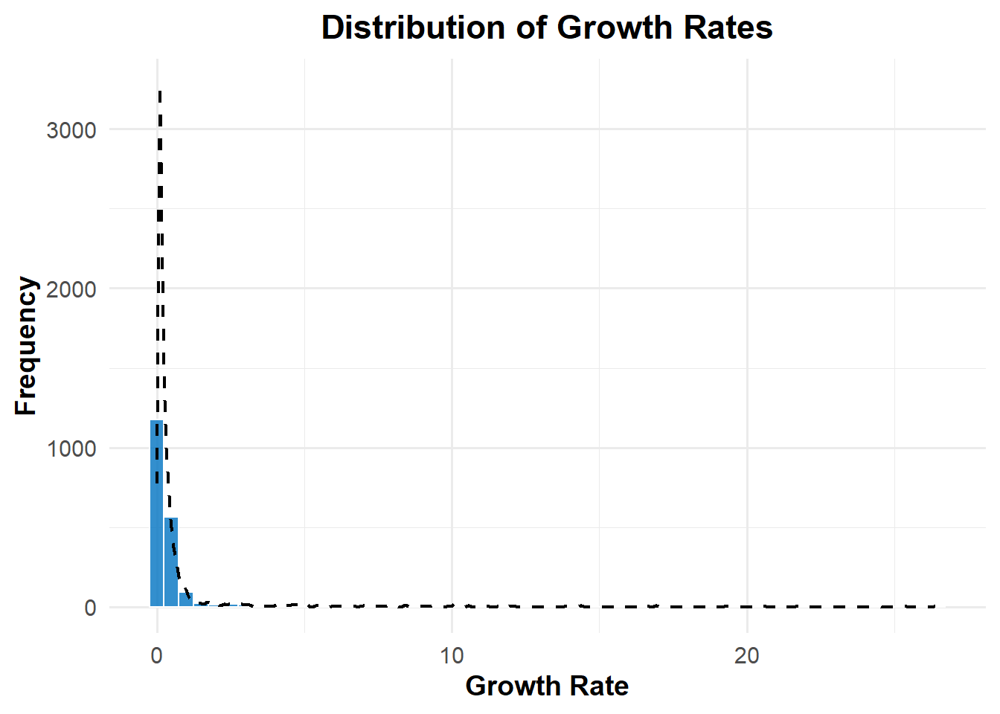
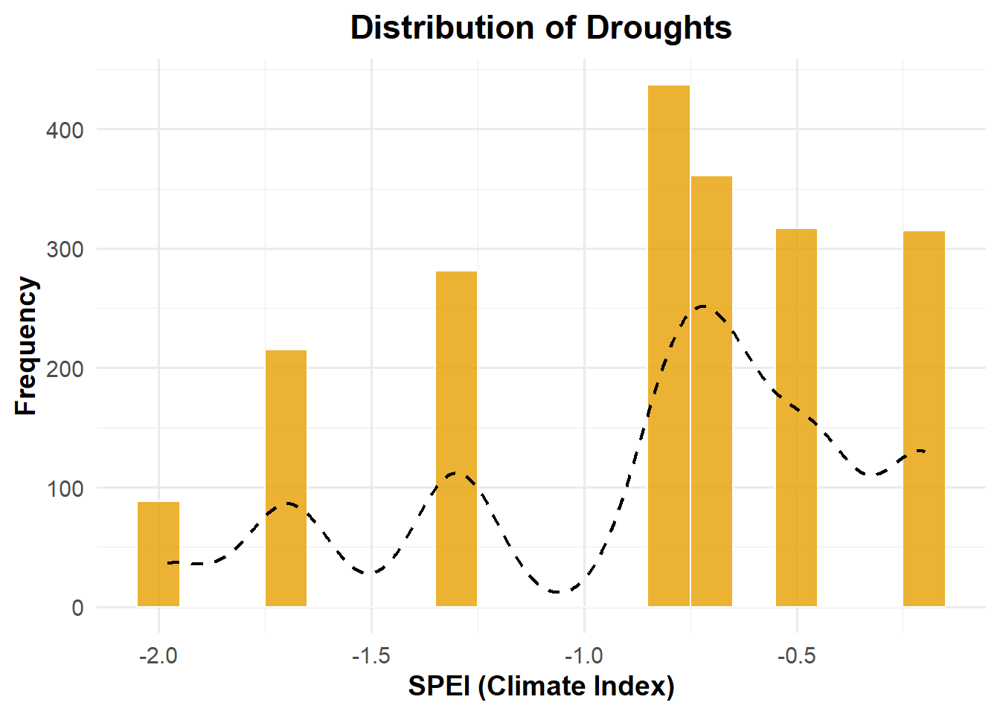
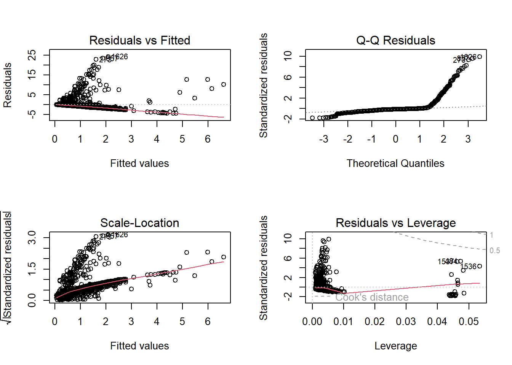
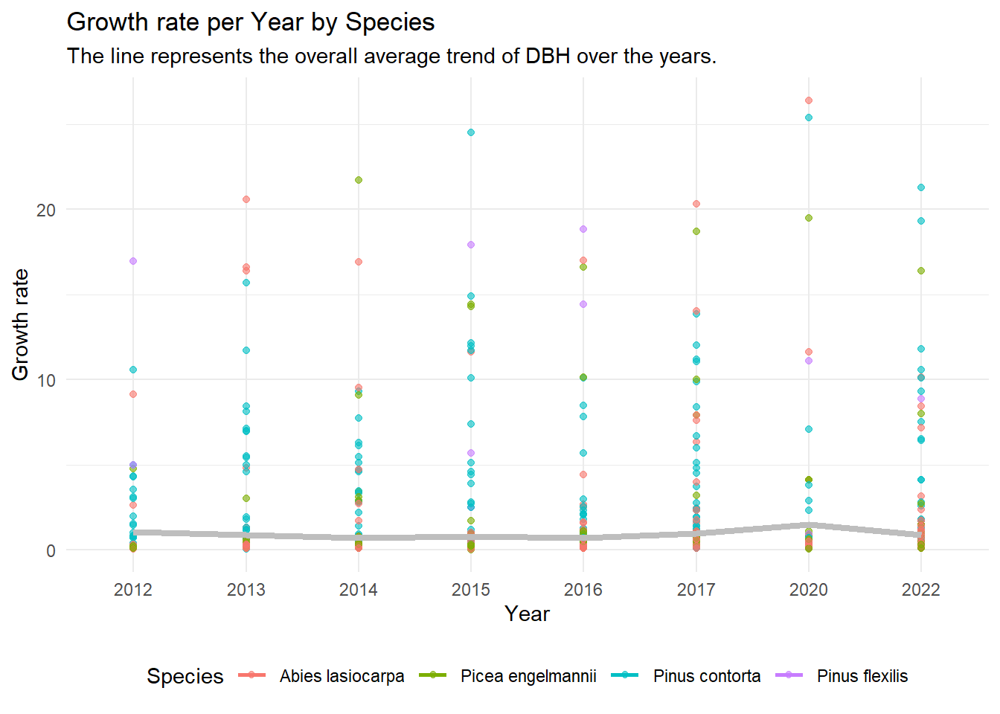
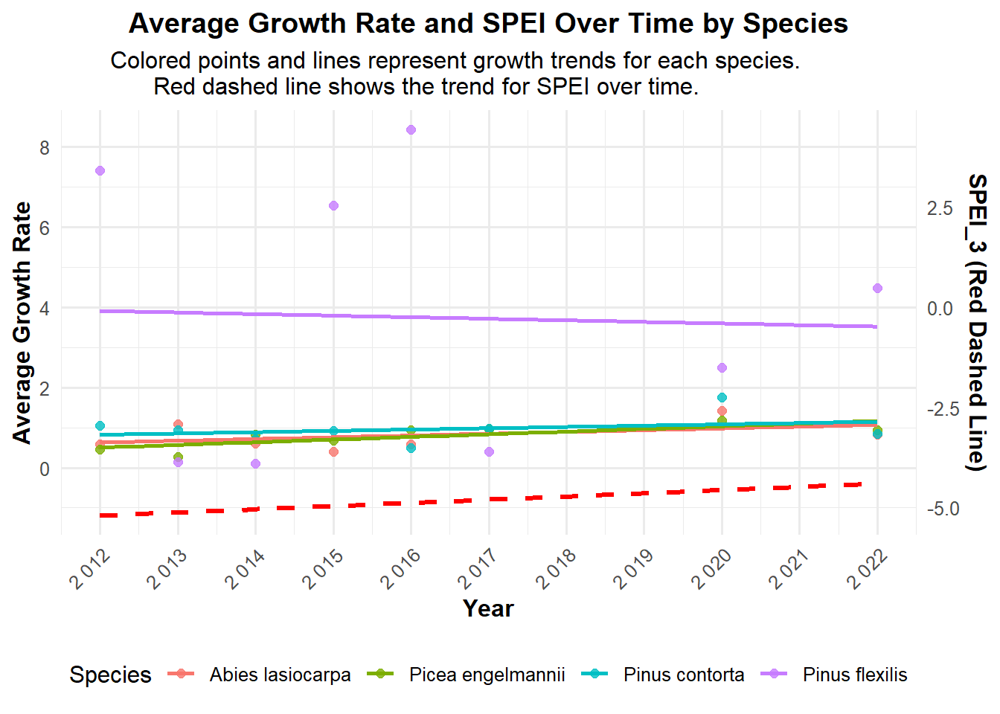
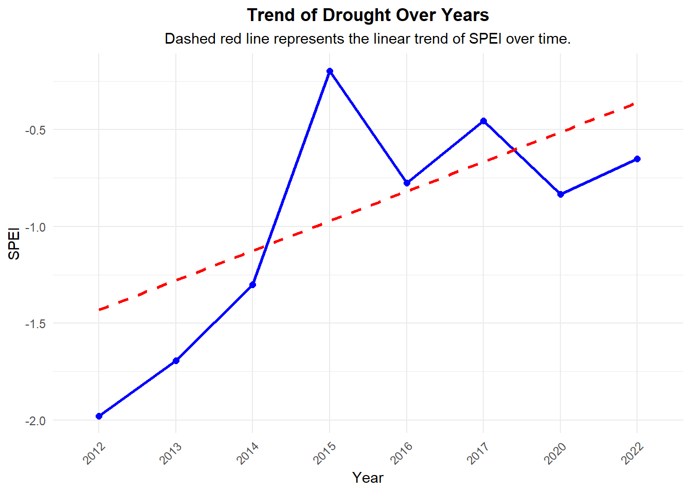
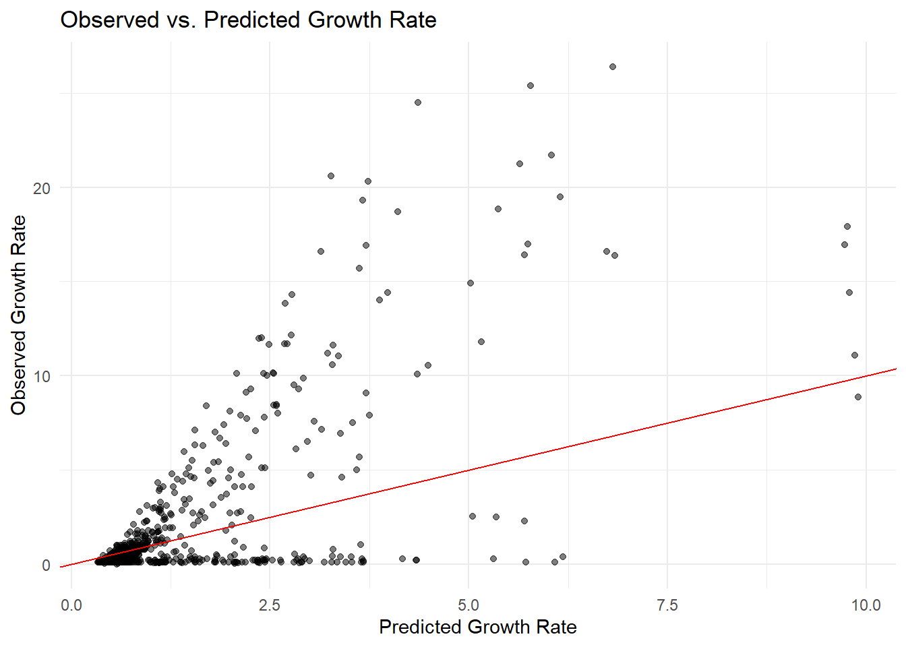
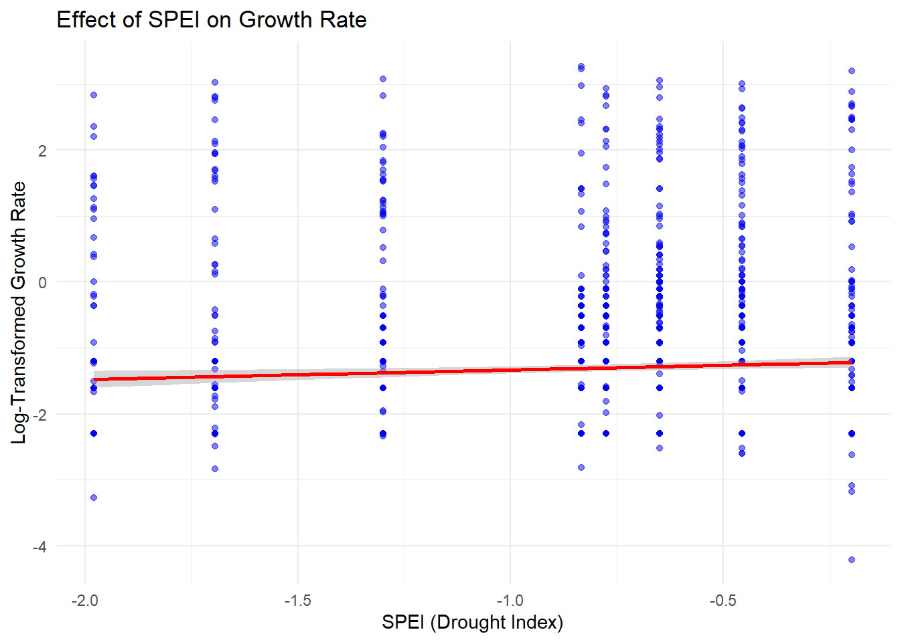
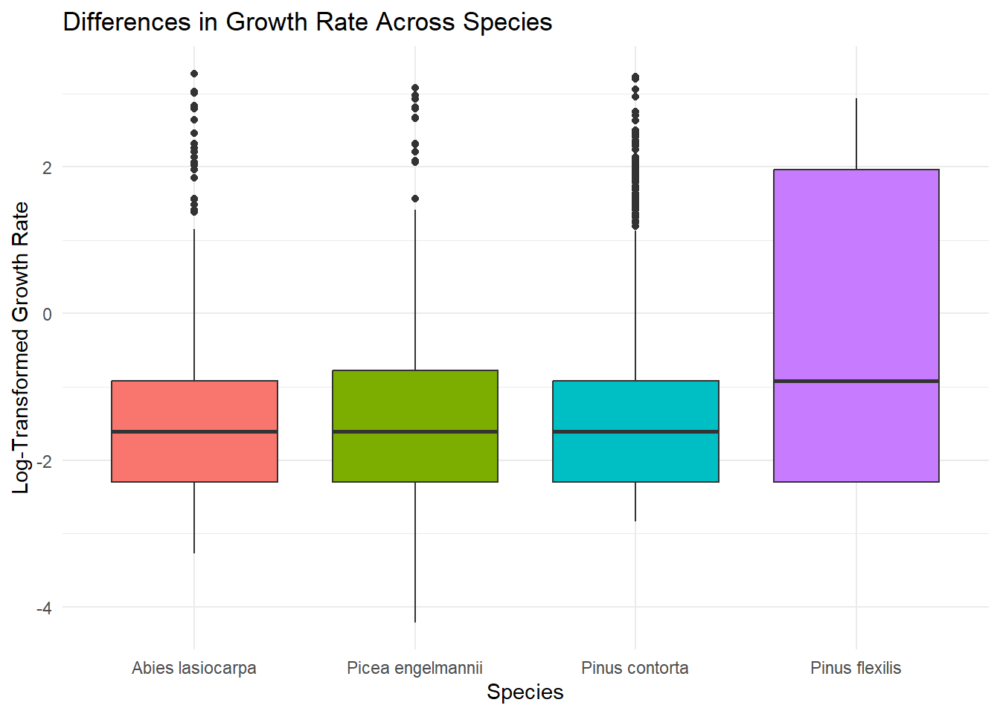

#Packages
library(readxl)
#data for Niwot Ridge Forest
NWT<- read_excel("01_Cleaning_dataframes/NWT_c.xlsx")CelayaRosas_final
This document belongs to the repository: https://github.com/maryelacelaya/ECOL_596_Finalproject_Maryela.git
For more information, please consult.
PART 1: Data description
Data sources
Growth data were obtained from The Forest Macrosystems Network (FMN) project. For this analysis, I focused on the Niwot Ridge, CO, USA: A subalpine forest. Growth data were collected during the sampling years 2012, 2013, 2014, 2015, 2016, 2017, 2019, 2020, and 2022.
Drought data were obtained from the SPEI Global Drought Monitor, with a spatial resolution of three months for each site. Only negative SPEI values, which indicate some level of drought, were included in the analysis. The annual average SPEI value was then calculated for each site to represent the drought conditions during the corresponding years.
Further details on data collection methods can be found on the respective website.
Description of columns
Load data
The forest dataset underwent preliminary cleaning (details available in 01_Cleaning_dataframes). While the dataset contain numerous columns, the following variables were specifically used for this analysis:
date.year: Year of the observation.site: Name of the forest (Niwot Ridge).plot/line: Subplot details. Each forest consists of five plots, and each plot includes 10 sampling lines or transects. Both “plot” and “line” were required to maintain homogeneity.main: A unique identifier for each tree or shrub.species_binomial: Scientific name of the tree or shrub species.SPEI_3: Standardized precipitation-evapotranspiration index (SPEI) at a three-month resolution, representing drought intensity.dbh: The raw value of diameter at breast height (DBH).
PART 2: Scientific goal
The central research question of this project is: “Are drought seasons reflected in the growth rates of trees?”
In a Directed Acyclic Graph (DAG), the relationship can be summarized as:
drought → growth. However, to include additional variables, the relationships expand to: year → drought → growth ← species.
I hypothesize that tree growth rates will exhibit a significant negative correlation with drought intensity, such that growth rates will decline during years characterized by more severe drought conditions.
PART 3: Statistical analysis
To test the effect of drought seasons on growth rates, I implemented a Mixed-Effects Model (MEM). Here:
Tree ID (main) was used as a random intercept to account for variability between individual trees.
SPEI, species, and year were included as fixed effects.
It is important to distinguish between main (tree ID) and species_binomial (species name). The former accounts for variability between individuals, while the latter reflects variability between taxonomic species.
Pre-statistical analysis settings
- Load necessary library
library(Matrix)
library(lme4)
library(lmerTest)
Attaching package: 'lmerTest'The following object is masked from 'package:lme4':
lmerThe following object is masked from 'package:stats':
steplibrary(forestmangr)
library(dplyr)
Attaching package: 'dplyr'The following objects are masked from 'package:stats':
filter, lagThe following objects are masked from 'package:base':
intersect, setdiff, setequal, unionlibrary(ggplot2)- I used the tree_summarise function from the forestmangr package to calculate the equivalent diameter for trees with multiple trunks.
#For Niwot Ridge Forest
NWT<-tree_summarise(NWT, #my DF
"dbh", #column with size measurements
tree="main", #tree id column
.groups = c("plot","date.year","site","line")) #parameters to subdivide the estimated dbhThe growth rate was calculated as the annual increase in the diameter at breast height (DBH). Specifically, I subtracted the DBH measurement of the previous year from the current year’s DBH value.
While there are more precise methods for calculating growth rates, this straightforward approach was chosen for simplicity and practicality in this analysis.
#For NWT NWT_rate <- NWT %>% group_by(main) %>% arrange(main, date.year) %>% # Ensure it's sorted by year within each tree mutate(growth_rate = c(NA, diff(dbh))) %>% ungroup() # Remove grouping after calculationNegative growth rates were excluded because a tree cannot decrease in size. Such values are likely due to measurement errors during data collection.
NWT_rate_c <- NWT_rate %>% filter(growth_rate >= 0) #Then, for a easier fit in the statistical models, decided to omit the observations where there was no growth rate NWT_rate_cf <- NWT_rate_c[NWT_rate_c$growth_rate > 0, ] NWT_rate_cf2 <- NWT_rate_cf[NWT_rate_cf$SPEI_3 <= 0, ]Data exploration
4.1. Distribution of variables.
The distribution of growth rates reveals that most trees experienced small or negligible growth increments. The SPEI values suggest that mild drought events were more frequent than severe droughts during the evaluated years.
# Histogram for growth_rate
ggplot(NWT_rate_cf2, aes(x = growth_rate)) +
geom_histogram(binwidth = 0.5, fill = "#0073C2FF", color = "white", alpha = 0.8) +
geom_density(aes(y = 0.5 * ..count..), color = "black", size = 0.8, linetype = "dashed") +
labs(
title = "Distribution of Growth Rates",
x = "Growth Rate",
y = "Frequency"
) +
theme_minimal(base_size = 14) +
theme(
plot.title = element_text(hjust = 0.5, face = "bold"),
axis.title = element_text(face = "bold")
)Warning: Using `size` aesthetic for lines was deprecated in ggplot2 3.4.0.
ℹ Please use `linewidth` instead.Warning: The dot-dot notation (`..count..`) was deprecated in ggplot2 3.4.0.
ℹ Please use `after_stat(count)` instead.
# Histogram for SPEI_3
ggplot(NWT_rate_cf2, aes(x = SPEI_3)) +
geom_histogram(binwidth = 0.1, fill = "#E69F00", color = "white", alpha = 0.8) +
geom_density(aes(y = 0.1 * ..count..), color = "black", size = 0.8, linetype = "dashed") +
labs(
title = "Distribution of Droughts",
x = "SPEI (Climate Index)",
y = "Frequency"
) +
theme_minimal(base_size = 14) +
theme(
plot.title = element_text(hjust = 0.5, face = "bold"),
axis.title = element_text(face = "bold")
)
4.2. Testing the assumptions for linear regression.
The residuals did not follow a normal distribution (p < 2.2e-16). A funnel-shaped pattern was observed, with increasing variability at higher fitted values, indicating heteroscedasticity.
# Fit a preliminary linear model
lm_model <- lm(growth_rate ~ SPEI_3 + dbh + species_binomial + date.year, data = NWT_rate_cf2)
# Check residuals for normality
par(mfrow = c(2, 2))
plot(lm_model)
# Perform a Shapiro-Wilk test for normality of residuals
shapiro.test(resid(lm_model))
Shapiro-Wilk normality test
data: resid(lm_model)
W = 0.44346, p-value < 2.2e-16Raw data overview
- Check the relationships between variables using correlations.
The results indicate almost no linear relationship between growth rate (neither DBH) and SPEI.
#Correlation between growth_rate and SPEI_3
cor(NWT_rate_cf2$growth_rate, NWT_rate_cf2$SPEI_3, use = "complete.obs")[1] 0.0003485786#Correlation matrix for all numeric variables
cor(NWT_rate_cf2[, c("growth_rate", "SPEI_3", "dbh")], use = "complete.obs") growth_rate SPEI_3 dbh
growth_rate 1.0000000000 0.0003485786 0.24201519
SPEI_3 0.0003485786 1.0000000000 0.04246706
dbh 0.2420151948 0.0424670636 1.00000000- Growth rate per year by species.
The average trend in growth rates appears relatively consistent across years, but 2020 stands out as a year with noticeably higher growth.
ggplot(NWT_rate_cf2, aes(x = as.factor(date.year), y = growth_rate, color = species_binomial)) +
geom_point(alpha = 0.6) + # Plot individual points with some transparency
geom_smooth(method = "lm", se = FALSE, aes(color = species_binomial), size = 1) +
stat_summary(fun = "mean", geom = "line", aes(group = 1), color = "gray", size = 1.5) + #line for overall average trend of growth rate
labs(
title = "Growth rate per Year by Species",
subtitle = "The line represents the overall average trend of DBH over the years.",
x = "Year",
y = "Growth rate",
color = "Species"
) +
theme_minimal() +
theme(legend.position = "bottom") # Position the legend at the bottom`geom_smooth()` using formula = 'y ~ x'
- Average Growth Rate and SPEI Over Time by Species
This plot suggests that the growth rate of all species, except Pinus flexilis, has improved over time. This trend aligns with the observed increase in the Standardized Precipitation-Evapotranspiration Index (SPEI), indicating a shift toward less severe drought conditions. Overall, the relationship between growth rate and SPEI is positive; however, the response appears to be species-specific.
# Calculate the average growth per year and species
avg_growth_per_year_species <- NWT_rate_cf2 %>%
group_by(date.year, species_binomial) %>%
summarize(avg_growth = mean(growth_rate, na.rm = TRUE), .groups = "drop")
# Create the plot
ggplot() +
# Points and trend lines for average growth per species
geom_point(data = avg_growth_per_year_species,
aes(x = date.year, y = avg_growth, color = species_binomial),
alpha = 0.8, size = 2) + # Increased transparency (alpha = 0.4)
geom_smooth(data = avg_growth_per_year_species,
aes(x = date.year, y = avg_growth, color = species_binomial),
method = "lm", se = FALSE, size = 1) +
# Dashed trend line for SPEI_3
geom_smooth(data = NWT_rate_cf2,
aes(x = date.year, y = SPEI_3),
method = "lm", se = FALSE, color = "red", size = 1.2, linetype = "dashed") +
# Dual y-axes
scale_y_continuous(
name = "Average Growth Rate",
sec.axis = sec_axis(~ . - 4, name = "SPEI_3 (Red Dashed Line)")
) + # Added "+" here
# Ensure x-axis (year) doesn't show decimals and rotate labels
scale_x_continuous(
breaks = scales::pretty_breaks(n = 10), # Regular intervals
labels = scales::number_format(accuracy = 1) # Show years as whole numbers
) +
# Titles and labels
labs(
title = "Average Growth Rate and SPEI Over Time by Species",
subtitle = "Colored points and lines represent growth trends for each species.\nRed dashed line shows the trend for SPEI over time.",
x = "Year",
color = "Species"
) +
# Custom theme
theme_minimal(base_size = 12) +
theme(
legend.position = "bottom",
plot.title = element_text(hjust = 0.5, face = "bold"),
axis.title = element_text(face = "bold"),
plot.subtitle = element_text(hjust = 0.3),
axis.text.x = element_text(angle = 45, hjust = 1) # Rotate x-axis labels
)`geom_smooth()` using formula = 'y ~ x'
`geom_smooth()` using formula = 'y ~ x'
- SPEI trend over year
Here we can confirm that the drought intensity has been decreasing over time (notice that -2 indicates a drier event than -0.5).
ggplot(NWT_rate_cf2, aes(x = as.factor(date.year), y = SPEI_3)) +
geom_point(alpha = 0.6, color = "blue", size = 2) + # Blue points with some transparency
geom_line(group = 1, color = "blue", size = 1) + # Line connecting the points
geom_smooth(data = NWT_rate_cf2, aes(x = as.numeric(as.factor(date.year)), y = SPEI_3),
method = "lm", se = FALSE, color = "red", size = 1, linetype = "dashed") + # Add red trend line
labs(
title = "Trend of Drought Over Years",
subtitle = "Dashed red line represents the linear trend of SPEI over time.",
x = "Year",
y = "SPEI"
) +
theme_minimal() + # Use a clean minimal theme
theme(
plot.title = element_text(hjust = 0.5, face = "bold"), # Center and bold the title
plot.subtitle = element_text(hjust = 0.5), # Center the subtitle
axis.text.x = element_text(angle = 45, hjust = 1) # Rotate x-axis labels
)`geom_smooth()` using formula = 'y ~ x'
Statistical test
Based on an initial exploration of the raw data, I tested a linear model (lm_model), which does not include interactions. Subsequently, I tested an interaction model (lm_interaction_model) to specifically examine the interaction between drought and species.
# Fit a linear model
lm_model <- lm(growth_rate ~ SPEI_3 + dbh + species_binomial + date.year, data = NWT_rate_cf2)
summary(lm_model)
Call:
lm(formula = growth_rate ~ SPEI_3 + dbh + species_binomial +
date.year, data = NWT_rate_cf2)
Residuals:
Min 1Q Median 3Q Max
-4.3550 -0.6911 -0.3770 -0.1559 24.3003
Coefficients:
Estimate Std. Error t value Pr(>|t|)
(Intercept) -38.106906 40.966527 -0.930 0.352
SPEI_3 -0.084802 0.123383 -0.687 0.492
dbh 0.063800 0.006558 9.729 < 2e-16 ***
species_binomialPicea engelmannii -0.106311 0.162811 -0.653 0.514
species_binomialPinus contorta -0.184910 0.129812 -1.424 0.154
species_binomialPinus flexilis 2.201364 0.546936 4.025 5.91e-05 ***
date.year 0.018934 0.020292 0.933 0.351
---
Signif. codes: 0 '***' 0.001 '**' 0.01 '*' 0.05 '.' 0.1 ' ' 1
Residual standard error: 2.458 on 2007 degrees of freedom
Multiple R-squared: 0.06898, Adjusted R-squared: 0.0662
F-statistic: 24.78 on 6 and 2007 DF, p-value: < 2.2e-16Check for interactions as well
# Including interactions between SPEI_3 and species
lm_interaction_model <- lm(growth_rate ~ SPEI_3 * species_binomial + dbh + date.year, data = NWT_rate_cf2)
summary(lm_interaction_model)
Call:
lm(formula = growth_rate ~ SPEI_3 * species_binomial + dbh +
date.year, data = NWT_rate_cf2)
Residuals:
Min 1Q Median 3Q Max
-4.9924 -0.7107 -0.3751 -0.1456 24.3013
Coefficients:
Estimate Std. Error t value Pr(>|t|)
(Intercept) -39.224876 40.985877 -0.957 0.33867
SPEI_3 -0.223329 0.207659 -1.075 0.28230
species_binomialPicea engelmannii 0.188490 0.314756 0.599 0.54934
species_binomialPinus contorta -0.090667 0.248384 -0.365 0.71513
species_binomialPinus flexilis 3.302718 1.021179 3.234 0.00124
dbh 0.063841 0.006558 9.734 < 2e-16
date.year 0.019430 0.020301 0.957 0.33865
SPEI_3:species_binomialPicea engelmannii 0.350597 0.320365 1.094 0.27393
SPEI_3:species_binomialPinus contorta 0.108872 0.249679 0.436 0.66285
SPEI_3:species_binomialPinus flexilis 1.159913 0.900827 1.288 0.19803
(Intercept)
SPEI_3
species_binomialPicea engelmannii
species_binomialPinus contorta
species_binomialPinus flexilis **
dbh ***
date.year
SPEI_3:species_binomialPicea engelmannii
SPEI_3:species_binomialPinus contorta
SPEI_3:species_binomialPinus flexilis
---
Signif. codes: 0 '***' 0.001 '**' 0.01 '*' 0.05 '.' 0.1 ' ' 1
Residual standard error: 2.459 on 2004 degrees of freedom
Multiple R-squared: 0.07018, Adjusted R-squared: 0.066
F-statistic: 16.81 on 9 and 2004 DF, p-value: < 2.2e-16Comparing for model selection. The result is giving pretty similar AIC values, but the lm_model is slightly lower.
# AIC comparison between models
AIC(lm_model, lm_interaction_model) df AIC
lm_model 8 9347.769
lm_interaction_model 11 9351.170Also conducted a F-Test for model comparison. The result highlights that the model with interactions is not providing a significant better fit (p-value=0.4599). Considering the AIC and F-test, the simpler model seems to be a better option.
# Perform an F-test to compare the two models
anova(lm_model, lm_interaction_model)Analysis of Variance Table
Model 1: growth_rate ~ SPEI_3 + dbh + species_binomial + date.year
Model 2: growth_rate ~ SPEI_3 * species_binomial + dbh + date.year
Res.Df RSS Df Sum of Sq F Pr(>F)
1 2007 12130
2 2004 12114 3 15.642 0.8625 0.4599MEM
MEM 1
Given the results from the AIC comparison and the F-test, and considering that the data is from multiple measurements from the same tree, I conducted a Mixed-Effects Model. In here, the tree ID (main) is considered as a random intercept, so each tree can have its own baseline growth rate, and used as a fixed effect the SPEI, species, and year.
# Fit the mixed-effects model
mixed_model1 <- lmer(growth_rate ~ SPEI_3 + species_binomial + date.year + (1|main), data = NWT_rate_cf2)
# Check the summary of the mixed-effects model
summary(mixed_model1)Linear mixed model fit by REML. t-tests use Satterthwaite's method [
lmerModLmerTest]
Formula: growth_rate ~ SPEI_3 + species_binomial + date.year + (1 | main)
Data: NWT_rate_cf2
REML criterion at convergence: 9357.4
Scaled residuals:
Min 1Q Median 3Q Max
-2.7243 -0.2082 -0.1603 -0.0926 9.1603
Random effects:
Groups Name Variance Std.Dev.
main (Intercept) 1.465 1.211
Residual 4.831 2.198
Number of obs: 2014, groups: main, 1030
Fixed effects:
Estimate Std. Error df t value
(Intercept) -3.656e+01 3.953e+01 1.794e+03 -0.925
SPEI_3 -1.273e-02 1.186e-01 1.746e+03 -0.107
species_binomialPicea engelmannii 5.208e-02 1.943e-01 8.460e+02 0.268
species_binomialPinus contorta 3.612e-03 1.498e-01 9.345e+02 0.024
species_binomialPinus flexilis 2.875e+00 6.316e-01 8.155e+02 4.551
date.year 1.852e-02 1.958e-02 1.794e+03 0.946
Pr(>|t|)
(Intercept) 0.355
SPEI_3 0.915
species_binomialPicea engelmannii 0.789
species_binomialPinus contorta 0.981
species_binomialPinus flexilis 6.15e-06 ***
date.year 0.344
---
Signif. codes: 0 '***' 0.001 '**' 0.01 '*' 0.05 '.' 0.1 ' ' 1
Correlation of Fixed Effects:
(Intr) SPEI_3 spc_Pe spc_Pc spc_Pf
SPEI_3 0.483
spcs_bnmlPe -0.015 -0.022
spcs_bnmlPc 0.015 -0.009 0.511
spcs_bnmlPf 0.006 0.021 0.121 0.157
date.year -1.000 -0.481 0.013 -0.017 -0.007# Perform likelihood ratio tests, to see how much each variable is influencing the growth rate
anova(mixed_model1)Type III Analysis of Variance Table with Satterthwaite's method
Sum Sq Mean Sq NumDF DenDF F value Pr(>F)
SPEI_3 0.056 0.056 1 1745.95 0.0115 0.9145161
species_binomial 102.439 34.146 3 872.78 7.0681 0.0001072 ***
date.year 4.325 4.325 1 1794.42 0.8952 0.3442053
---
Signif. codes: 0 '***' 0.001 '**' 0.01 '*' 0.05 '.' 0.1 ' ' 1To assess model fit (check model diagnostics: residuals, random effects, etc.). Based on this plot, most of the points are clustered close to the lower values, this may mean that the model is predicting low growth rates reasonably well, but higher growth rates are not fitting well. There’s also high residual variability not explained by the effects that I included in the model.
#Observed vs predicted values
predicted_growth <- predict(mixed_model1)
ggplot(NWT_rate_cf2, aes(x = predicted_growth, y = growth_rate)) +
geom_point(alpha = 0.5) +
geom_abline(slope = 1, intercept = 0, color = "red") +
labs(title = "Observed vs. Predicted Growth Rate", x = "Predicted Growth Rate", y = "Observed Growth Rate") +
theme_minimal()
MEM 2
To stabilize variance, I applied a log transformation to the growth rate, which reduced the REML criterion but did not fully explain residual variability (residual variance = 0.9831).
mixed_model2 <- lmer(log(growth_rate) ~ SPEI_3 + species_binomial + date.year + (1|main), data = NWT_rate_cf2)
summary(mixed_model2)Linear mixed model fit by REML. t-tests use Satterthwaite's method [
lmerModLmerTest]
Formula: log(growth_rate) ~ SPEI_3 + species_binomial + date.year + (1 |
main)
Data: NWT_rate_cf2
REML criterion at convergence: 6193.4
Scaled residuals:
Min 1Q Median 3Q Max
-2.4173 -0.5927 -0.1536 0.3805 3.9402
Random effects:
Groups Name Variance Std.Dev.
main (Intercept) 0.3261 0.5710
Residual 0.9831 0.9915
Number of obs: 2014, groups: main, 1030
Fixed effects:
Estimate Std. Error df t value
(Intercept) -1.275e+02 1.792e+01 1.784e+03 -7.118
SPEI_3 -1.724e-02 5.375e-02 1.733e+03 -0.321
species_binomialPicea engelmannii 6.192e-02 8.933e-02 8.584e+02 0.693
species_binomialPinus contorta -1.090e-01 6.880e-02 9.446e+02 -1.584
species_binomialPinus flexilis 8.056e-01 2.905e-01 8.295e+02 2.773
date.year 6.261e-02 8.875e-03 1.784e+03 7.054
Pr(>|t|)
(Intercept) 1.58e-12 ***
SPEI_3 0.74840
species_binomialPicea engelmannii 0.48843
species_binomialPinus contorta 0.11346
species_binomialPinus flexilis 0.00569 **
date.year 2.47e-12 ***
---
Signif. codes: 0 '***' 0.001 '**' 0.01 '*' 0.05 '.' 0.1 ' ' 1
Correlation of Fixed Effects:
(Intr) SPEI_3 spc_Pe spc_Pc spc_Pf
SPEI_3 0.483
spcs_bnmlPe -0.015 -0.022
spcs_bnmlPc 0.014 -0.009 0.511
spcs_bnmlPf 0.006 0.020 0.121 0.157
date.year -1.000 -0.481 0.013 -0.017 -0.007anova(mixed_model2)Type III Analysis of Variance Table with Satterthwaite's method
Sum Sq Mean Sq NumDF DenDF F value Pr(>F)
SPEI_3 0.101 0.101 1 1733.17 0.1029 0.748404
species_binomial 14.199 4.733 3 884.86 4.8140 0.002484 **
date.year 48.923 48.923 1 1783.81 49.7618 2.474e-12 ***
---
Signif. codes: 0 '***' 0.001 '**' 0.01 '*' 0.05 '.' 0.1 ' ' 1Results visualization
Effect of SPEI on growth rate
ggplot(NWT_rate_cf2, aes(x = SPEI_3, y = log(growth_rate))) +
geom_point(alpha = 0.5, color = "blue") +
geom_smooth(method = "lm", se = TRUE, color = "red") +
labs(title = "Effect of SPEI on Growth Rate",
x = "SPEI (Drought Index)",
y = "Log-Transformed Growth Rate") +
theme_minimal()`geom_smooth()` using formula = 'y ~ x'
Growth Rate Differences by Species
# Growth rate per species
ggplot(NWT_rate_cf2, aes(x = species_binomial, y = log(growth_rate), fill = species_binomial)) +
geom_boxplot() +
labs(title = "Differences in Growth Rate Across Species",
x = "Species",
y = "Log-Transformed Growth Rate") +
theme_minimal() +
theme(legend.position = "none")
PART 4: Interpretation and Conclusion
The most significant factor affecting growth rate is species, highlighting species-specific responses to environmental conditions. Meanwhile, the climatic drought index (SPEI) does not significantly influence growth rates, as evidenced by the non-significant coefficient and p-value.
This analysis suggests that drought alone may not explain growth patterns. Other climatic variables, such as temperature or precipitation, or longer temporal scales (e.g., prolonged drought periods), may better capture the drivers of tree growth variability. Non-climatic factors, such as soil properties or competition, may also warrant further investigation.